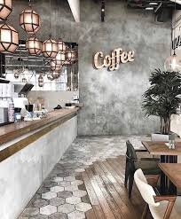
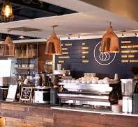

“Where Every Street Meets Great Coffee.”

Urban Brew Experience
🌍 Our Branches
At BeanStreet, we’re growing one cup at a time. Our branches are designed to bring you a warm, modern coffee experience—wherever you are. Each location blends local culture with our signature brews, creating a space to relax, work, and connect.
📍 Chennai – Flagship Store
Our first and most loved outlet, located in the heart of the city.
A vibrant space known for its cozy interiors, quick service, and full menu of signature coffees.
📍 Coimbatore – Brew Hub
Inspired by the nearby coffee estates, this branch focuses on fresh roasts and specialty brews.
Perfect for true coffee lovers.
📍 Bangalore – Urban Café
A modern, work-friendly café with fast Wi-Fi and a relaxed vibe.
Ideal for meetings, freelancers, and coffee breaks.
📍 Madurai – Classic Corner
Blending tradition with modern taste, this outlet serves both classic filter coffee and café-style drinks.
📍 Hyderabad – Chill Lounge
A stylish hangout spot with cold brews, frappes, and late-night vibes.
☕ What Makes Every Branch Special?
Consistent quality in every cup
Freshly roasted premium beans
Comfortable and aesthetic ambiance
Friendly and skilled baristas

Crafted Coffee Bar
At BeanStreet, every branch is designed to offer more than just coffee—it’s an experience. From warm lighting and modern interiors to the rich aroma of freshly brewed beans, each location reflects our passion for quality and comfort. Whether you’re stopping by for a quick espresso, catching up with friends, or enjoying a quiet moment, our spaces are crafted to feel inviting, stylish, and uniquely yours. No matter which branch you visit, you’ll always find the same commitment to great taste, cozy vibes, and exceptional service.

Cozy Corner Retreat
At BeanStreet, our branches are thoughtfully crafted to blend contemporary design with a warm, welcoming atmosphere. With elegant wooden accents, ambient lighting, and a refined coffee bar setup, each space reflects our dedication to both style and substance. The rich aroma of freshly ground beans fills the air as skilled baristas bring every cup to life with precision and care. Whether you’re here to unwind, work, or connect, BeanStreet offers a sophisticated yet cozy environment where every detail is designed to elevate your coffee experience.

Signature BeanStreet Vibe
At BeanStreet, some of our branches are designed as cozy retreats where comfort meets character. With rustic brick walls, soft seating, and natural light streaming through large windows, these spaces invite you to slow down and savor the moment. Whether you’re enjoying a quiet coffee alone or sharing conversations with friends, the relaxed ambiance creates a home-away-from-home feeling. Every corner is thoughtfully styled to offer warmth, calm, and the perfect setting to unwind with your favorite brew.